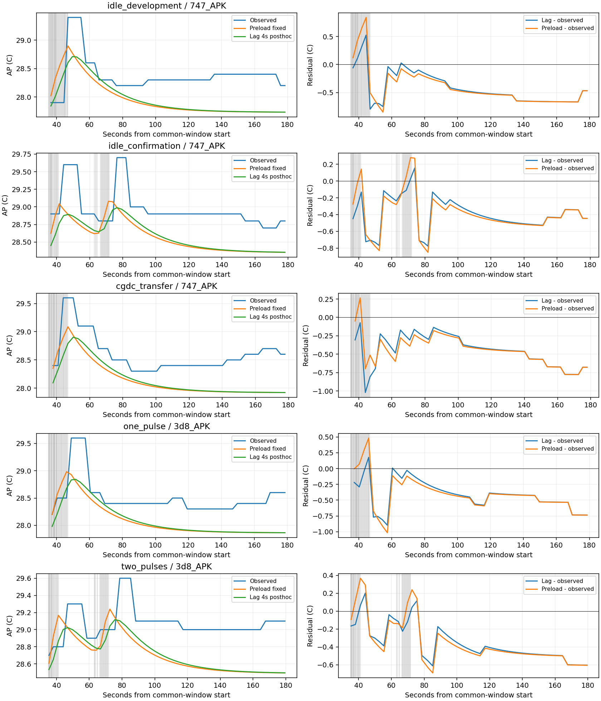
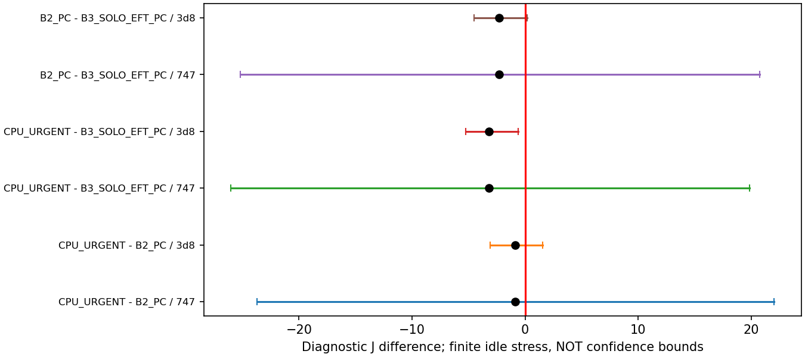

결과·논의 본문 · 재현·자료 역할 · 수치 JSON · 검증
새 실측0. 이미 본5세션의 사후 후보 평가이며 독립 확인0입니다. 평균 오차만으로 후보를 채택하지 않았습니다. strict·기본 모형·experiment_ready=false를 유지합니다.
기존 개발1세션만으로 지연4초를 적합했습니다. 다른4세션은 적합에서 제외했지만 이미 본 자료입니다. β·상태별 계수·부하 전 기준 추정법은 고정했습니다. 물리 지연을 식별했다는 뜻은 아닙니다.
| 자료 | 기존→지연 후보 MAE °C | 판정 |
|---|---|---|
| 개발 | 0.488→0.450 | 사후 적합 |
| 기존 확인 | 0.418→0.398 | 사후 적합 제외 |
| CG_DC 전이 | 0.463→0.452 | 최대오차 악화 |
| 한 묶음 | 0.450→0.423 | 후기 상승 미재현 |
| 두 반묶음 | 0.405→0.373 | 후기 상승 미재현 |
최고온도 오차는5개 모두 악화했습니다. 관측 AP와 회색 실제 lane 활성 구간, 기존/후보 경로 및 잔차를 함께 표시합니다. 부하 전 관측과 실제 일정이 입력된 조건부 계산입니다.

창·표본·오차 · 경로 · 후기 방향 · 적합 목적함수 · 전체 세션 제외 안정성
저장 queue/201/간섭1.5 일정3개만 사용했습니다. 서비스 선별은 B2 통과/B3 부적격입니다. 미지원 짧은 전환에 동결 W를 적용한 진단 산술에서 CPU_URGENT−B2는−0.884J, 대칭 유휴 잔차 부호 전환 경계는0.00410W입니다. 공통 배경이면 상쇄되지만 두 실행에서 같다는 증거는 없습니다.

검은 점은 미지원 전환 진단 산술이고 선은 유한 스트레스 경우입니다. 신뢰구간·보편 오차·검증된 정책 성능이 아닙니다. 구간·식 CSV · 출처별 잔차. 검증된 전체창 J·AP 최고·정책 순위는 null입니다.
| PC에서 완료 | 실측이 있어야 확대 가능한 주장 |
|---|---|
| 저장 일정 서비스 비교·고정 묶음 상충·조건부 AP·후보 기각·민감도·재현·본문 | 비교 가능한 CPU_URGENT/B2 실행의 J/AP 차이와 실행 간 변동성 |
| 지연1항만으로는 최고/후기 오차가 해결되지 않음 | 준비·부하 이력에 따른 AP 반응의 식별과 새 고정 모형의 독립 확인 |
새 계획·실측은 시작하지 않았습니다. 한 쌍 직접 비교를 동적 모형 검증으로 표현하지 않으며 반복 수·정밀도를 근거 없이 보장하지 않습니다. 상세 최소 관측·종료 기준은 본문 마지막 표에 있습니다.